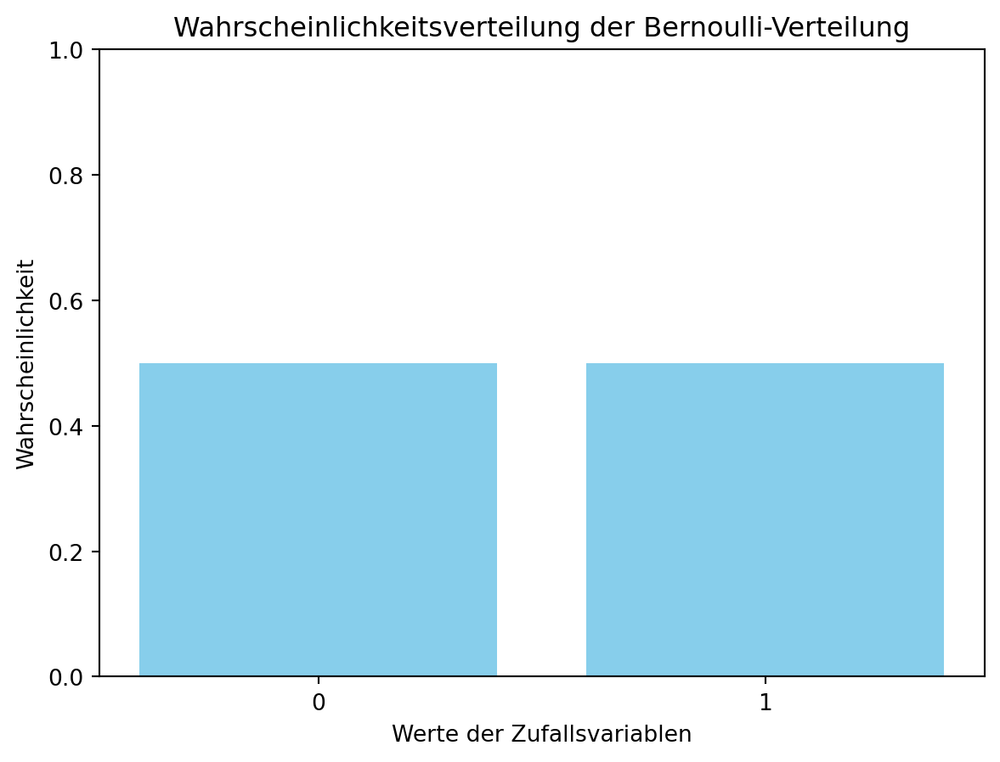
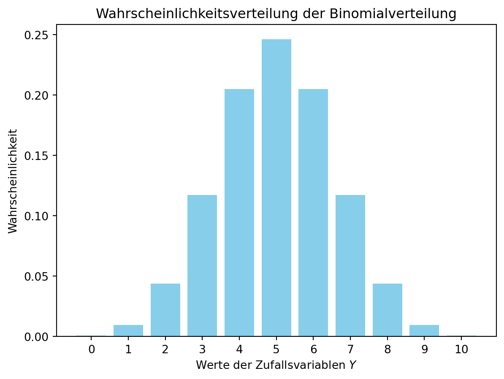
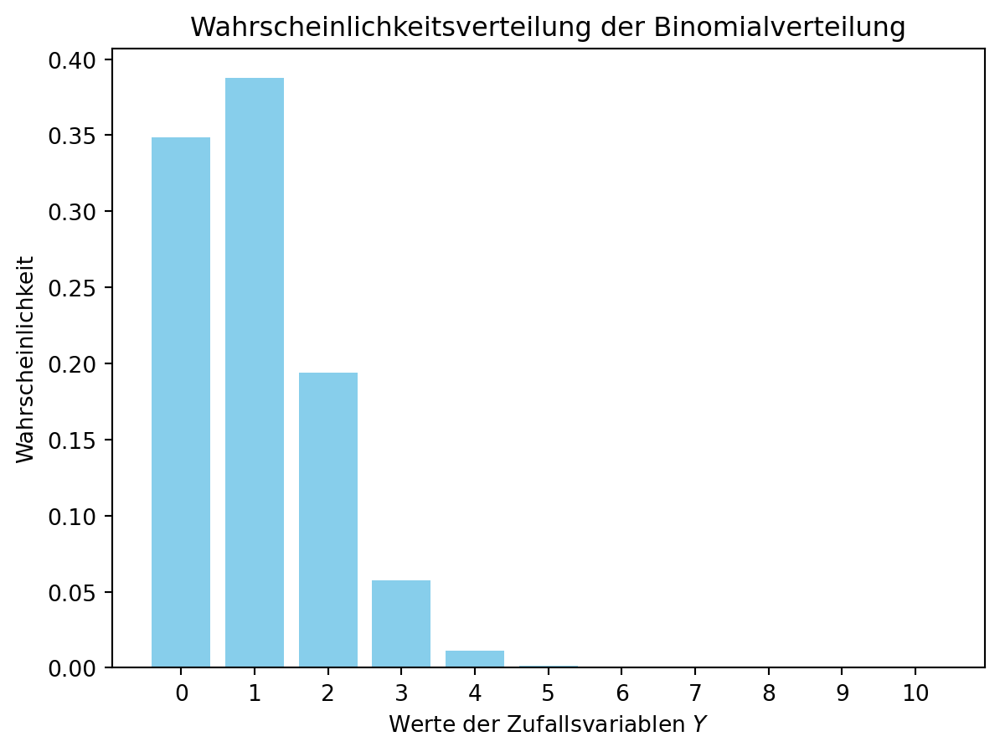
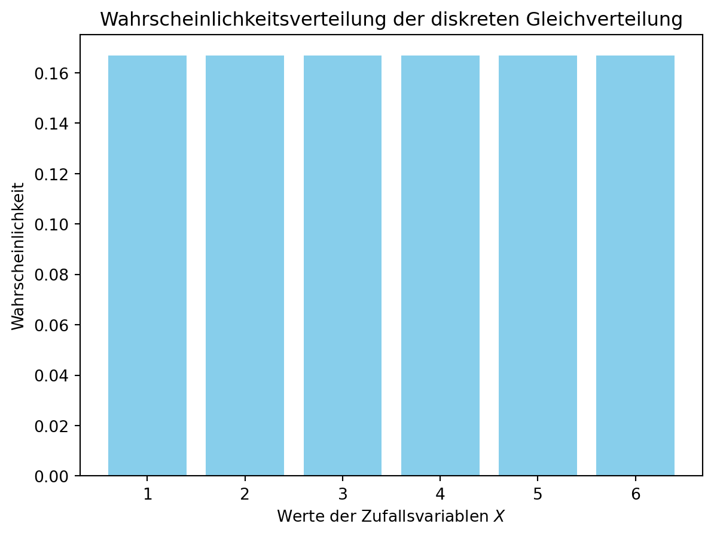
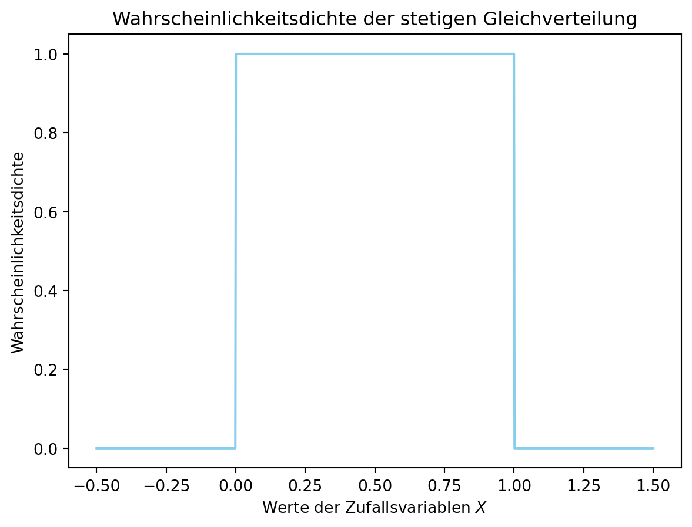
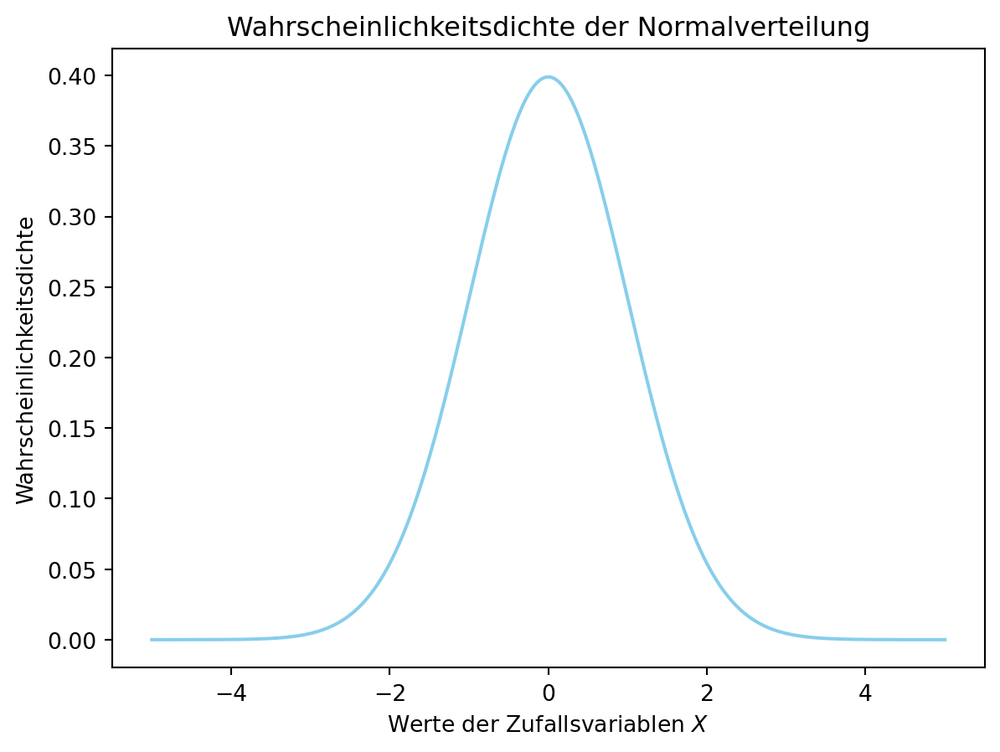
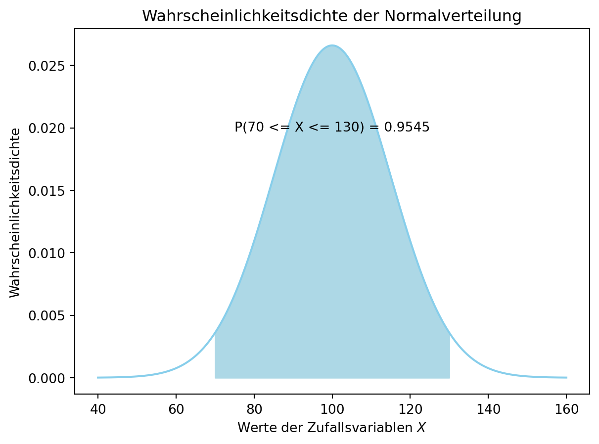
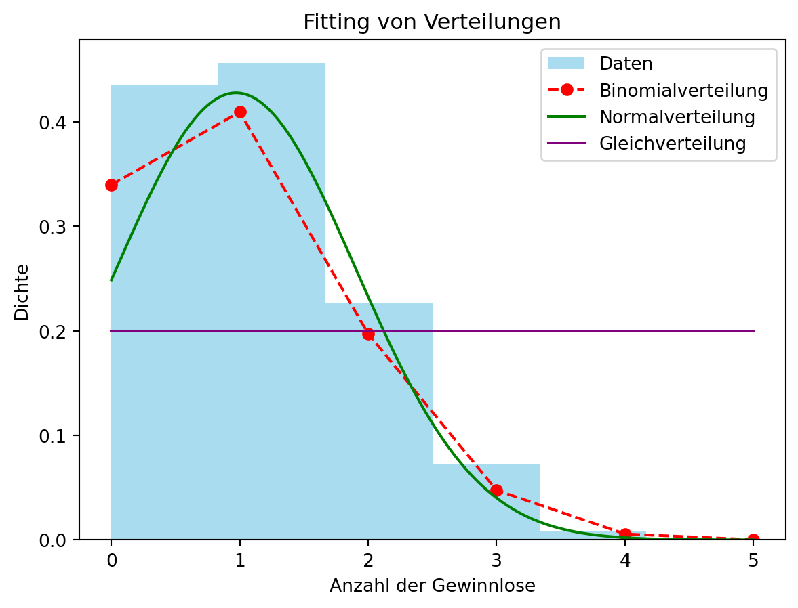
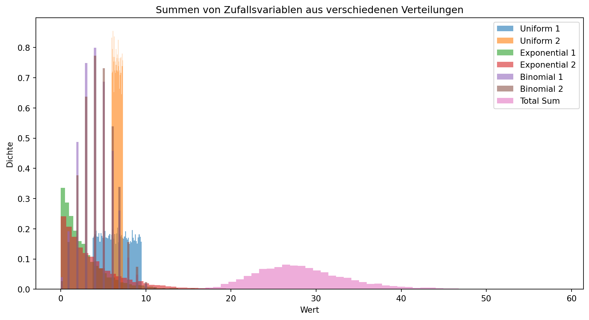
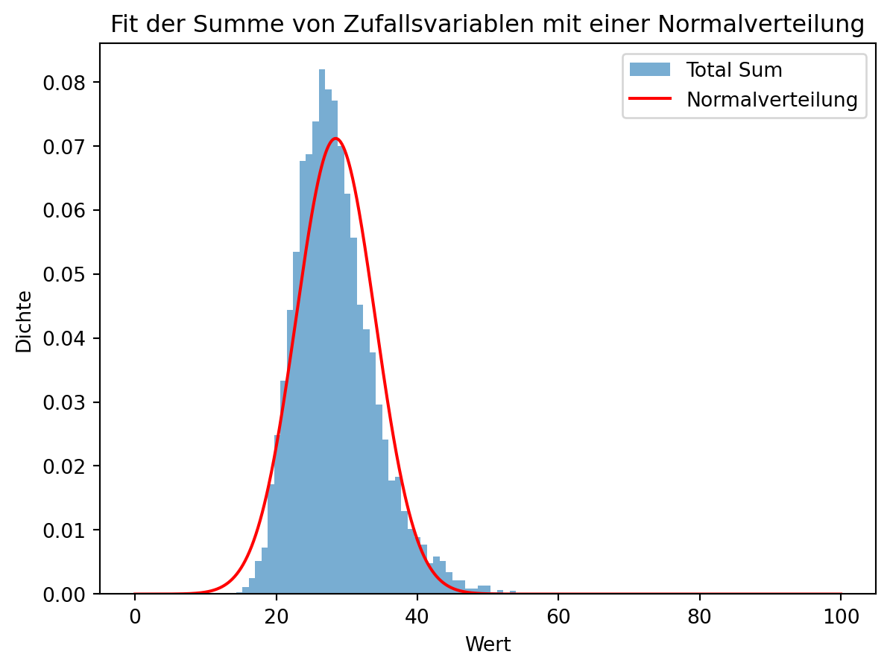

4 Verteilungen
In diesem Abschnitt werden die Verteilungen der einzelnen Variablen untersucht. Dazu werden die Verteilungen der einzelnen Variablen in Form von Histogrammen dargestellt. Die Histogramme zeigen die Häufigkeitsverteilung der einzelnen Variablen. Die Verteilungen der einzelnen Variablen werden in den folgenden Abbildungen dargestellt.
4.1 Diskrete Verteilungen
Diskrete Verteilungen sind Wahrscheinlichkeitsverteilungen, die nur diskrete Werte annehmen können. Die diskreten Verteilungen, die in diesem Abschnitt untersucht werden, sind die Bernoulli-Verteilung, die Binomialverteilung und die Poisson-Verteilung.
4.1.1 Bernoulli-Verteilung
Die Bernoulli-Verteilung ist eine diskrete Wahrscheinlichkeitsverteilung, die nur zwei mögliche Werte annehmen kann. Ein typisches Beispiel für eine Bernoulli-Verteilung ist das Werfen einer Münze. Die Münze kann entweder Kopf oder Zahl zeigen. Die Wahrscheinlichkeit, dass die Münze Kopf zeigt, wird mit \(p\) bezeichnet. Die Wahrscheinlichkeit, dass die Münze Zahl zeigt, wird mit \(1-p\) bezeichnet. Die Wahrscheinlichkeitsfunktion der Bernoulli-Verteilung ist gegeben durch:
Nun können wir die Wahrscheinlichsverteilung durch eine Formel darstellen.
\[ P(X=x) = \begin{cases} p & \text{für } x=1, \\ 1-p & \text{für } x=0. \end{cases} \]
Wir schreiben eine Zufallsvariable \(X\) als \(X \sim \text{Bernoulli}(p)\), um auszudrücken, dass \(X\) eine Bernoulli-verteilte Zufallsvariable mit Parameter \(p\) ist.
Für den Wurf einer fairen Münze nimmt den Wert 1 an, wenn die Münze Kopf zeigt, und den Wert 0 an, wenn die Münze Zahl zeigt. Die Wahrscheinlichkeitsfunktion der Bernoulli-Verteilung für die faire Münze ist gegeben durch:
\(X \sim \text{Bernoulli}(p=0.5)\)
Die folgende Abbildung zeigt die Wahrscheinlichkeitsverteilung der Bernoulli-Verteilung für die faire Münze.
import numpy as np
import matplotlib.pyplot as plt
# Parameter der Bernoulli-Verteilung
p = 0.5
# Werte der Zufallsvariablen
x = np.array([0, 1])
# Wahrscheinlichkeitsfunktion der Bernoulli-Verteilung
P_X = np.array([1-p, p])
# Plot der Wahrscheinlichkeitsverteilung
plt.bar(x, P_X, color='skyblue')
plt.xlabel('Werte der Zufallsvariablen')
plt.ylabel('Wahrscheinlichkeit')
plt.title('Wahrscheinlichkeitsverteilung der Bernoulli-Verteilung')
plt.ylim(0, 1)
plt.xticks(x)
plt.show()
In der Abbildung (fig:sec-dataexploratory-distributions-bernoulli-distribution?) wird nun jeder möglichen Realisierung der Zufallsvariablen \(X\) die entsprechende Wahrscheinlichkeit zugeordnet. Im Gegensatz zu, Histogrammen, in denen reale Häufigkeiten dargestellt werden, zeigt die Abbildung die theoretischen Wahrscheinlichkeiten der Zufallsvariablen.
4.1.1.1 Erwartungswert und Varianz der Bernoulli-Verteilung
Der Erwartungswert einer Verteilung ist ein Maß für die zentrale Tendenz der Verteilung. Er gibt den durchschnittlichen Wert der Zufallsvariablen an. Der Erwartungswert einer Zufallsvariablen \(X\) wird durch \(E(X)\) bezeichnet. Allgemein ergibt sich der Erwartungswert einer Zufallsvariablen \(X\) durch die Summe der Produkte der Werte der Zufallsvariablen und deren Wahrscheinlichkeiten.
Der Erwartungswert einer diskreten Zufallsvariablen \(X\) ist definiert als:
\[ E(X) = \sum_{x} x \cdot P(X=x), \]
Der Erwartungswert und die Varianz der Bernoulli-Verteilung können durch die folgenden Formeln berechnet werden:
Der Erwartungswert der Bernoulli-Verteilung ist gegeben durch:
\[ E(X) = p. \]
Grundsätzlich berechnet sich der Erwartungswert einer diskreten Zufallsvariablen \(X\) durch die Summe der Produkte der Werte der Zufallsvariablen und deren Wahrscheinlichkeiten. Für die Bernoulli-Verteilung ist der Erwartungswert gleich dem Parameter \(p\).
\[ E(X) = \sum_{x} x \cdot P(X=x) = 0 \cdot (1-p) + 1 \cdot p = p. \]
4.1.1.2 Varianz der Bernoulli-Verteilung
Die Varianz einer Verteilung ist ein Maß für die Streuung der Verteilung. Sie gibt an, wie weit die Werte der Zufallsvariablen von ihrem Erwartungswert abweichen. Die Varianz einer Zufallsvariablen \(X\) wird durch \(\text{Var}(X)\) bezeichnet.
Die Varianz der Bernoulli-Verteilung ist gegeben durch:
\[ \text{Var}(X) = p \cdot (1-p). \]
Grundsätzlich berechnet sich die Varianz einer Zufallsvariablen \(X\) durch die Summe der quadrierten Abweichungen der Werte der Zufallsvariablen von ihrem Erwartungswert, gewichtet mit den Wahrscheinlichkeiten der Zufallsvariablen. Für die Bernoulli-Verteilung ist die Varianz gleich \(p \cdot (1-p)\).
\[ \text{Var}(X) = \sum_{x} (x - E(X))^2 \cdot P(X=x) = (0 - p)^2 \cdot (1-p) + (1 - p)^2 \cdot p = p \cdot (1-p). \]
4.1.2 Binomialverteilung
Stellen wir uns vor, dass wird nun den Wurf einer Münze \(n\)-mal wiederholen. Die Würfe sind unabhängig voneinander. Die Wahrscheinlichkeit, dass die Münze Kopf zeigt, ist zudem immer \(p\). Die Wahrscheinlichkeit, dass die Münze Zahl zeigt, ist \(1-p\). Wir Interessieren uns nun dafür, wie oft die Münze Kopf zeigt. Die Anzahl der Kopfwürfe ist eine Zufallsvariable \(Y\). Die Zufallsvariable \(Y\) ist binomialverteilt. Die Binomialverteilung beschreibt die Anzahl der Erfolge in \(n\) unabhängigen Bernoulli-Experimenten.
import numpy as np
import math
import matplotlib.pyplot as plt
# Parameter der Binomialverteilung
n = 10
p = 0.5
def binomial_distribution(n, p):
# Werte der Zufallsvariablen
y = np.arange(0, n+1)
# Wahrscheinlichkeitsfunktion der Binomialverteilung
P_Y = np.array([math.comb(n, y_i) * p**y_i * (1-p)**(n-y_i) for y_i in y])
# Plot der Wahrscheinlichkeitsverteilung
plt.bar(y, P_Y, color='skyblue')
plt.xlabel('Werte der Zufallsvariablen $Y$')
plt.ylabel('Wahrscheinlichkeit')
plt.title('Wahrscheinlichkeitsverteilung der Binomialverteilung')
plt.xticks(y)
plt.show()
binomial_distribution(n, p)
Man kann auch sagen die Würfe sind unabhängig und identisch verteilt. Abgekürzt \(Y \sim \text{Bin}(n, p)\). Die Wahrscheinlichkeitsfunktion der Binomialverteilung ist gegeben durch:
\[ P(Y=y) = \binom{n}{y} \cdot p^y \cdot (1-p)^{n-y}. \]
Das Symbol \(\binom{n}{y}\) bezeichnet den Binomialkoeffizienten. Der Binomialkoeffizient gibt an, auf wie viele verschiedene Arten \(y\) Erfolge in \(n\) Versuchen auftreten können. Der Binomialkoeffizient ist definiert als:
\[ \binom{n}{y} = \frac{n!}{y! \cdot (n-y)!}. \]
Wenn wir die Werte anpassen und z.B. ein Los ziehen, dann ist die Wahrscheinlichkeit, dass wir ein Gewinnlos ziehen \(p=0.1\). Die Wahrscheinlichkeitsfunktion der Binomialverteilung für das Ziehen eines Gewinnloses aus 10 Losen ist gegeben durch:
\(Y \sim \text{Bin}(n=10, p=0.1)\)
Die folgende Abbildung zeigt die Wahrscheinlichkeitsverteilung der Binomialverteilung für das Ziehen eines Gewinnloses aus 10 Losen.
binomial_distribution(n = 10, p = 0.1)
4.1.2.1 Erwartungswert und Varianz der Binomialverteilung
Der Erwartungswert und die Varianz der Binomialverteilung können durch die folgenden Formeln berechnet werden:
Der Erwartungswert der Binomialverteilung ist gegeben durch:
\[ E(Y) = n \cdot p. \]
Die Varianz der Binomialverteilung ist gegeben durch:
\[ \text{Var}(Y) = n \cdot p \cdot (1-p). \]
4.1.3 Diskrete Gleichverteilung
Die diskrete Gleichverteilung ist eine diskrete Wahrscheinlichkeitsverteilung, bei der alle möglichen Werte der Zufallsvariablen die gleiche Wahrscheinlichkeit haben. Klassisches Beispiel ist hier der Wurf eines Würfels. Die diskrete Gleichverteilung ist auch als diskrete Uniformverteilung bekannt. Die diskrete Gleichverteilung ist definiert auf einem endlichen Intervall von ganzen Zahlen. Die Wahrscheinlichkeitsfunktion der diskreten Gleichverteilung ist gegeben durch:
\[ P(X=x) = \frac{1}{n}, \]
für \(x=1, 2, \ldots, n\). Die Zufallsvariable \(X\) wird als \(X \sim \text{DU}(n)\) bezeichnet, um auszudrücken, dass \(X\) eine diskret gleichverteilte Zufallsvariable auf dem Intervall \([1, n]\) ist.
import numpy as np
import matplotlib.pyplot as plt
# Parameter der diskreten Gleichverteilung
n = 6
# Werte der Zufallsvariablen
x = np.arange(1, n+1)
# Wahrscheinlichkeitsfunktion der diskreten Gleichverteilung
P_X = np.array([1/n for x_i in x])
# Plot der Wahrscheinlichkeitsverteilung
plt.bar(x, P_X, color='skyblue')
plt.xlabel('Werte der Zufallsvariablen $X$')
plt.ylabel('Wahrscheinlichkeit')
plt.title('Wahrscheinlichkeitsverteilung der diskreten Gleichverteilung')
plt.xticks(x)
plt.show()
In der Abbildung (fig:sec-dataexploratory-distributions-discrete-uniform-distribution?) wird die Wahrscheinlichkeitsverteilung der diskreten Gleichverteilung für das Würfeln eines Würfels dargestellt. Die Wahrscheinlichkeitsverteilung zeigt, dass alle möglichen Werte der Zufallsvariablen die gleiche Wahrscheinlichkeit haben.
4.1.3.1 Erwartungswert und Varianz der diskreten Gleichverteilung
Der Erwartungswert und die Varianz der diskreten Gleichverteilung können durch die folgenden Formeln berechnet werden:
Der Erwartungswert der diskreten Gleichverteilung ist gegeben durch:
\[ E(X) = \frac{n+1}{2}. \]
Die Varianz der diskreten Gleichverteilung ist gegeben durch:
\[ \text{Var}(X) = \frac{n^2-1}{12}. \]
4.2 Stetige Verteilungen
Stetige Verteilungen sind Wahrscheinlichkeitsverteilungen, die kontinuierliche Werte annehmen können. Die stetigen Verteilungen, die in diesem Abschnitt untersucht werden, sind die Normalverteilung, die Exponentialverteilung und die Gleichverteilung.
4.2.1 Stetige Gleichverteilung
Die stetige Gleichverteilung ist eine stetige Wahrscheinlichkeitsverteilung, bei der alle Werte innerhalb eines Intervalls die gleiche Wahrscheinlichkeit haben. Die stetige Gleichverteilung ist definiert auf einem Intervall von reellen Zahlen. Die Wahrscheinlichkeitsdichte der stetigen Gleichverteilung ist gegeben durch:
\[ f(x) = \begin{cases} \frac{1}{b-a} & \text{für } a \leq x \leq b, \\ 0 & \text{sonst}. \end{cases} \]
Die Zufallsvariable \(X\) wird als \(X \sim \text{U}(a, b)\) bezeichnet, um auszudrücken, dass \(X\) eine stetig gleichverteilte Zufallsvariable auf dem Intervall \([a, b]\) ist.
Bei stetigen Verteilungen geben die Wahrscheinlichkeitsdichten die Wahrscheinlichkeiten an. Die Wahrscheinlichkeiten werden durch die Fläche unter der Wahrscheinlichkeitsdichte bestimmt. Die Fläche unter der Wahrscheinlichkeitsdichte ist gleich 1.
import numpy as np
import matplotlib.pyplot as plt
# Parameter der stetigen Gleichverteilung
a = 0
b = 1
# Werte der Zufallsvariablen
x = np.linspace(a-0.5, b+0.5, 1000)
# Wahrscheinlichkeitsdichte der stetigen Gleichverteilung
f_X = np.array([1/(b-a) if a <= x_i <= b else 0 for x_i in x])
# Plot der Wahrscheinlichkeitsdichte
plt.plot(x, f_X, color='skyblue')
plt.xlabel('Werte der Zufallsvariablen $X$')
plt.ylabel('Wahrscheinlichkeitsdichte')
plt.title('Wahrscheinlichkeitsdichte der stetigen Gleichverteilung')
plt.show()
Wir können nun keine Aussagen mehr über die Wahrscheinlichkeit eines bestimmten Wertes machen, da die Wahrscheinlichkeit eines einzelnen Wertes 0 ist. Wir können jedoch Aussagen über die Wahrscheinlichkeit eines Wertebereichs machen. Die Wahrscheinlichkeit, dass die Zufallsvariable \(X\) einen Wert im Intervall \([a, b]\) annimmt, ist gegeben durch:
\[ P(a \leq X \leq b) = \int_{a}^{b} f(x) \, dx. \]
4.2.1.1 Beispiel: Die Ausfallwahrscheinlichkeit eines elektronischen Bauteils
Der Ausfall eines elektronischen Bauteils erfolgt nach einer stetigen Gleichverteilung auf dem Intervall \([0, 3650]\) Tagen. Wie wahrscheinlich ist es, dass das Bauteil innerhalb der ersten 1000 Tage ausfällt?
Die Ausfallwahrscheinlichkeit des elektronischen Bauteils ist \(X \sim \text{U}(0, 3650)\)
Die Wahrscheinlichkeitsdichte der stetigen Gleichverteilung ist gegeben durch:
\[ f(x) = \begin{cases} \frac{1}{3650} & \text{für } 0 \leq x \leq 3650, \\ 0 & \text{sonst}. \end{cases} \]
Die Wahrscheinlichkeit für einen Ausfall innerhalb der ersten 1000 Tage ist gegeben durch:
\[ P(0 \leq X \leq 1000) = \int_{0}^{1000} f(x) \, dx = \int_{0}^{1000} \frac{1}{3650} \, dx = \frac{1000}{3650} = 0.274. \]
4.2.2 Normalverteilung
Die Normalverteilung ist eine stetige Wahrscheinlichkeitsverteilung, die in vielen Anwendungen in der Statistik und den Naturwissenschaften vorkommt. Die Normalverteilung ist durch ihre Glockenkurve gekennzeichnet. Die Glockenkurve zeigt, dass die Werte der Zufallsvariablen um den Erwartungswert herum symmetrisch verteilt sind. Die Wahrscheinlichkeitsdichte der Normalverteilung ist gegeben durch:
\[ f(x) = \frac{1}{\sqrt{2\pi} \sigma} \exp\left(-\frac{(x-\mu)^2}{2\sigma^2}\right), \]
für \(-\infty < x < \infty\). Die Zufallsvariable \(X\) wird als \(X \sim \mathcal{N}(\mu, \sigma^2)\) bezeichnet, um auszudrücken, dass \(X\) eine normalverteilte Zufallsvariable mit Erwartungswert \(\mu\) und Varianz \(\sigma^2\) ist.
Sofern \(\mu=0\) und \(\sigma=1\) ist, spricht man von einer Standardnormalverteilung. \(X \sim \mathcal{N}(0, 1)\). Die Standardnormalverteilung ist eine spezielle Form der Normalverteilung. Die Standardnormalverteilung hat einen Erwartungswert von 0 und eine Varianz von 1.
import numpy as np
import matplotlib.pyplot as plt
# Parameter der Normalverteilung
mu = 0
sigma = 1
# Werte der Zufallsvariablen
x = np.linspace(-5, 5, 1000)
# Wahrscheinlichkeitsdichte der Normalverteilung
f_X = 1/(np.sqrt(2*np.pi)*sigma) * np.exp(-(x-mu)**2/(2*sigma**2))
# Plot der Wahrscheinlichkeitsdichte
plt.plot(x, f_X, color='skyblue')
plt.xlabel('Werte der Zufallsvariablen $X$')
plt.ylabel('Wahrscheinlichkeitsdichte')
plt.title('Wahrscheinlichkeitsdichte der Normalverteilung')
plt.show()
In Zeiten als es noch keine Computer gab, war es schwierig die Fläche unter der Kurve zu (\(P(X \leq x)\)) zu berechnen. Entsprechend konnte man die Fläche unter der Kurve in Tabellen nachschlagen. \(Z\)-Wert-Tabellen sind Tabellen, die die Fläche unter der Standardnormalverteilungskurve für verschiedene Werte von \(Z\) anzeigen. Die \(Z\)-Tabelle gibt die Wahrscheinlichkeit an, dass eine Zufallsvariable \(Z\) einen Wert kleiner oder gleich einem bestimmten Wert annimmt.
Beispielsweise können wir ablesen, dass
- \(P(Z \leq 0) = 0.5\), d.h. die Wahrscheinlichkeit, dass eine Zufallsvariable \(Z\) einen Wert kleiner oder gleich 0 annimmt, beträgt 50%.
- \(P(Z \leq 1) = 0.8413\), d.h. die Wahrscheinlichkeit, dass eine Zufallsvariable \(Z\) einen Wert kleiner oder gleich 1 annimmt, beträgt 84.13%.
- \(P(Z \leq -1) = 1 - P(Z \leq 1) = 1 - 0.8413 = 0.1587\), d.h. die Wahrscheinlichkeit, dass eine Zufallsvariable \(Z\) einen Wert kleiner oder gleich -1 annimmt, beträgt 15.87%.
Umgekehrt können wir auch die Z-Werte für eine bestimmte Wahrscheinlichkeit ablesen. Beispielsweise können wir ablesen, dass
- \(P(Z \leq z) = 0.95\) für \(z = 1.645\), d.h. die Wahrscheinlichkeit, dass eine Zufallsvariable \(Z\) einen Wert kleiner oder gleich 1.645 annimmt, beträgt 95%.
4.2.2.1 Erwartungswert und Varianz der Normalverteilung
Im allgemeinen Fall berechnet sich der Erwartungswert einer stetigen Zufallsvariablen \(X\) durch die Fläche unter der Kurve der Wahrscheinlichkeitsdichte. Der Erwartungswert einer stetigen Zufallsvariablen \(X\) ist definiert als:
\[ E(X) = \mu = \int_{-\infty}^{\infty} x \cdot f(x) \, dx, \]
die Varianz einer stetigen Zufallsvariablen \(X\) ist definiert als:
\[ \text{Var}(X) = \sigma^2 = E(X-\mu_x)^2= \int_{-\infty}^{\infty} (x - \mu)^2 \cdot f(x) \, dx. \]
4.2.2.1.1 Standardisierung der Normalverteilung
In der Realität verhalten sich viele Zufallsvariablen nicht wie die Standardnormalverteilung, sondern eine Normalverteilung mit einem anderen Erwartungswert und einer anderen Varianz. Um die Normalverteilung auf eine Standardnormalverteilung zu überführen, wird die Zufallsvariable standardisiert. Die Standardisierung einer Zufallsvariable \(X\) erfolgt durch die folgende Formel:
\[ Z = \frac{X - \mu}{\sigma}, \]
wobei \(Z\) die standardisierte Zufallsvariable ist, \(\mu\) der Erwartungswert der Zufallsvariable \(X\) und \(\sigma\) die Standardabweichung der Zufallsvariable \(X\). Die standardisierte Zufallsvariable \(Z\) hat einen Erwartungswert von 0 und eine Varianz von 1. Hier können dann die Werte in der \(Z\)-Tabelle nachgeschlagen werden.
Heute können wir die Fläche unter der Kurve mit Hilfe von Computerprogrammen berechnen. Der Intelligenz-Quotient (IQ) ist ein Beispiel für eine normalverteilte Zufallsvariable. Der IQ hat einen Erwartungswert von 100 und eine Standardabweichung von 15.
Der IQ ist also \(X \sim \mathcal{N}(100, 15^2)\). Wie wahrscheinlich ist es, dass eine Person einen IQ von 130 oder mehr hat?
4.2.2.2 Analytische Berechnung von Wahrscheinlichkeiten
Wir können die Wahrscheinlichkeitsdichte-Funktion direkt aufschreiben:
\[ f(x) = \frac{1}{\sqrt{2\pi} \cdot 15} \exp\left(-\frac{(x-100)^2}{2 \cdot 15^2}\right), \]
und mit dieser dann die Wahrscheinlichkeit, dass eine Person einen IQ geringer als 130 hat, berechnen \(P(X \leq 130)\). Wir benötigen jedoch die Gegenwahrscheinlichkeit, dass eine Person einen IQ von 130 oder mehr hat: \[ P(X \geq 130) = 1 - P(X \leq 130) = 1 - \int_{-\infty}^{130} f(x) \, dx. \]
Dies ergibt:
\[ P(X \geq 130) = 1 - \int_{-\infty}^{130} \frac{1}{\sqrt{2\pi} \cdot 15} \exp\left(-\frac{(x-100)^2}{2 \cdot 15^2}\right) \, dx = 0.0227501. \]
Die Wahrscheinlichkeit, dass eine Person hochbegabt ist, beträgt also 2.27501%.
4.2.2.3 Berechnung von Wahrscheinlichkeiten mit Python
Im Python kommen wir z.B. das Modul scipy.stats verwenden, um die Wahrscheinlichkeit zu berechnen. Hier gibt es die Funktion norm.cdf(x, loc=mu, scale=sigma), die die kumulative Verteilungsfunktion der Normalverteilung berechnet. Die kumulative Verteilungsfunktion gibt die Wahrscheinlichkeit an, dass eine Zufallsvariable einen Wert kleiner oder gleich einem bestimmten Wert annimmt.
import numpy as np
from scipy.stats import norm
# Parameter der Normalverteilung
mu = 100
sigma = 15
# Wahrscheinlichkeit, dass eine Person
# einen IQ von 130 oder mehr hat
P_X_geq_130 = 1 - norm.cdf(130, loc=mu, scale=sigma)
print(f'P(X >= 130) = {P_X_geq_130:.4f}')P(X >= 130) = 0.02284.2.2.4 Visualisierung der Wahrscheinlichkeiten
Häufig stellt sich wie frage, welcher Anteil einer Population innerhalb von einer oder zwei Standardabweichungen liegt. Hierzu müssen wir folgendes berechnen:
\[ P(\mu - \sigma \leq X \leq \mu + \sigma) = P(X \leq \mu + \sigma) - P(X \leq \mu - \sigma) = \text{cdf}(\mu + \sigma) - \text{cdf}(\mu - \sigma). \]
import numpy as np
import matplotlib.pyplot as plt
from scipy.stats import norm
# Parameter der Normalverteilung
mu = 100
sigma = 15
# Werte der Zufallsvariablen
x = np.linspace(mu - 4*sigma, mu + 4*sigma, 1000)
# Wahrscheinlichkeitsdichte der Normalverteilung
f_X = 1/(np.sqrt(2*np.pi)*sigma) * np.exp(-(x-mu)**2/(2*sigma**2))
# Wahrscheinlichkeit, dass eine Person
# einen IQ von 2 Standardabweichungen vom Mittelwert hat
P_X_2_sigma = norm.cdf(mu + 2*sigma, loc=mu, scale=sigma) - norm.cdf(mu - 2*sigma, loc=mu, scale=sigma)
print(f'P({mu - 2*sigma} <= X <= {mu + 2*sigma}) = {P_X_2_sigma:.4f}')
# Plot der Wahrscheinlichkeitsdichte
plt.plot(x, f_X, color='skyblue')
plt.fill_between(x, f_X, where=(x >= mu - 2*sigma) & (x <= mu + 2*sigma), color='lightblue')
plt.xlabel('Werte der Zufallsvariablen $X$')
plt.ylabel('Wahrscheinlichkeitsdichte')
plt.title('Wahrscheinlichkeitsdichte der Normalverteilung')
# Text mit der Wahrscheinlichkeit
plt.text(mu, 0.02, f'P({mu - 2*sigma} <= X <= {mu + 2*sigma}) = {P_X_2_sigma:.4f}', horizontalalignment='center', verticalalignment='center')
plt.show()P(70 <= X <= 130) = 0.9545
Der IQ ist willkürlich so skaliert, dass der Mittelwert bei 100 liegt und die Standardabweichung bei 15. Die Wahrscheinlichkeit, dass eine Person einen IQ von 130 oder mehr hat, beträgt 2.23%. Die Wahrscheinlichkeit, dass eine Person einen IQ von 2 Standardabweichungen vom Mittelwert hat, beträgt 95.45%. Dies bedeutet, dass 95.45% der Bevölkerung einen IQ zwischen 70 und 130 haben.
4.3 Weitere Verteilungen
Neben der Normalverteilung gibt es noch weitere stetige Verteilungen, die in der Statistik und den Naturwissenschaften vorkommen. Dazu gehören die Exponentialverteilung und die Gleichverteilung. Diese kommen zum Beispiel in der Zuverlässigkeitsanalyse und der Simulation von Zufallsprozessen vor.
- Die Exponentialverteilung ist eine stetige Wahrscheinlichkeitsverteilung, die die Zeit zwischen unabhängigen Ereignissen beschreibt. Anwendungsfälle sind die Zuverlässigkeitsanalyse und die Warteschlangentheorie.
- Die Poissionverteilung ist eine diskrete Wahrscheinlichkeitsverteilung, die die Anzahl der Ereignisse in einem festen Zeitintervall beschreibt. Anwendungsfälle sind die Modellierung von Zufallsprozessen und die Warteschlangentheorie.
Verschiedene Verteilungen finden sich im Python-Modul scipy.stats. Das Modul enthält Funktionen zur Berechnung von Wahrscheinlichkeiten und zur Erzeugung von Zufallszahlen für verschiedene Verteilungen.
4.4 Fitting von Verteilungen
In der Praxis ist es oft notwendig, die Verteilung von Daten zu bestimmen. Dieser Prozess wird als Fitting bezeichnet. Das Ziel des Fittings ist es, die Verteilung zu finden, die die Daten am besten beschreibt. Es gibt verschiedene Methoden, um die Verteilung von Daten zu bestimmen. Dazu gehören die Methode der kleinsten Quadrate, Maximum-Likelihood-Schätzung und die Methode der Momente.
Als Beispiel nehmen wir unsere Lottrie-Daten, wobei die Anzahl der Gewinnlose \(X \sim \text{Bin}(10, 0.1)\) binomialverteilt ist. Wir können nun die Verteilung der Daten bestimmen, indem wir die Binomialverteilung anpassen.
import numpy as np
import math
import matplotlib.pyplot as plt
from scipy.stats import binom, norm, uniform
import seaborn as sns
# Simulierte Daten für die Anzahl der Gewinnlose pro Ziehung
np.random.seed(42) # Für Reproduzierbarkeit
data = np.random.binomial(n=10, p=0.1, size=1000) # 1000 Ziehungen mit Binomialverteilung
# Schätzung der Binomialparameter
n_est = np.max(data) # Annahme: n entspricht dem höchsten beobachteten Wert
p_est = np.mean(data) / n_est # Erwartungswert von p = Mittelwert/n
# Wahrscheinlichkeitswerte für Binomialverteilung
binom_x = np.arange(0, n_est + 1)
binom_y = binom.pmf(binom_x, n=n_est, p=p_est)
# Schätzung und Werte für Normalverteilung
mu, sigma = norm.fit(data)
norm_x = np.linspace(0, n_est, 1000)
norm_y = norm.pdf(norm_x, mu, sigma)
# Schätzung und Werte für Gleichverteilung
a, b = uniform.fit(data)
uniform_x = np.linspace(0, n_est, 1000)
uniform_y = uniform.pdf(uniform_x, a, b-a) # Höhe der Gleichverteilung = 1/(b-a)
# Plot der Histogramme und Verteilungen
plt.hist(data, bins=n_est + 1, density=True, color='skyblue', alpha=0.7, label='Daten')
plt.plot(binom_x, binom_y, color='red', marker='o', linestyle='dashed', label='Binomialverteilung')
plt.plot(norm_x, norm_y, color='green', label='Normalverteilung')
plt.plot(uniform_x, uniform_y, color='purple', label='Gleichverteilung')
plt.xlabel('Anzahl der Gewinnlose')
plt.ylabel('Dichte')
plt.title('Fitting von Verteilungen')
plt.legend()
plt.show()
4.5 Rechnen mit Verteilungen, Zufallsvariablen und Erwartungswert
Der zentrale Grenzwertsatz besagt, dass die Summe einer großen Anzahl von unabhängigen und identisch verteilten Zufallsvariablen einer Normalverteilung folgt, unabhängig von der Form der Verteilung der Zufallsvariablen. Der zentrale Grenzwertsatz spielt eine wichtige Rolle in der Statistik, da er die Grundlage für viele statistische Methoden bildet.
4.5.1 Recheneregeln für Erwartungswert und Varianz
Für die Summe von unabhängigen Zufallsvariablen \(X_1, X_2, \ldots, X_n\) gelten die folgenden Rechenregeln für den Erwartungswert und die Varianz:
- Der Erwartungswert der Summe von Zufallsvariablen ist gleich der Summe der Erwartungswerte der Zufallsvariablen, unabängig davon, ob die Zufallsvariablen unabhängig sind oder nicht:
\[ E(X_1 + X_2 + \ldots + X_n) = E(X_1) + E(X_2) + \ldots + E(X_n). \]
- Die Varianz der Summe von Zufallsvariablen ist gleich der Summe der Varianzen der Zufallsvariablen:
\[ \text{Var}(X_1 + X_2) = \text{Var}(X_1) + \text{Var}(X_2) + 2 \text{Cov}(X_1, X_2), \]
wenn die Zufallsvariablen unabhängig sind, ist die Kovarianz 0.
- Für Linearkombinationen von Zufallsvariablen \(aX + bY\) gelten die folgenden Rechenregeln für den Erwartungswert und die Varianz:
\[ E(aX + bY) = aE(X) + bE(Y). \]
\[ \text{Var}(aX + bY) = a^2 \text{Var}(X) + b^2 \text{Var}(Y) + 2ab \text{Cov}(X, Y), \]
wobei \(\text{Cov}(X, Y)\) die Kovarianz zwischen den Zufallsvariablen \(X\) und \(Y\) ist und 0 ist, wenn \(X\) und \(Y\) unabhängig sind.
4.5.2 Beispiel: Summen von Zufallsvariablen aus verschiedenen Verteilungen
Es existieren auch Verallgemeinerungen, z.B., dass die Zufallsvariablen nicht identisch verteilt sein müssen. So zeigt, das folgende Beispiel, dass auch die Summe von Zufallsvariablen aus verschiedenen Verteilungen einer Normalverteilung folgen kann, wenn die Anzahl der Zufallsvariablen groß genug ist.
import numpy as np
import matplotlib.pyplot as plt
# Set seed
np.random.seed(42)
# Anzahl der Zufallswerte
N = 10000
# Uniformverteilung
low1, high1 = np.random.uniform(0, 10, 2)
low2, high2 = np.random.uniform(0, 10, 2)
X_uni_1 = np.random.uniform(low1, high1, N)
X_uni_2 = np.random.uniform(low2, high2, N)
# Exponentialverteilung
scale1, scale2 = np.random.uniform(0.5, 5, 2)
X_exp_1 = np.random.exponential(scale1, N)
X_exp_2 = np.random.exponential(scale2, N)
# Binomialverteilung
n1, p1 = np.random.randint(10, 50), np.random.uniform(0.1, 0.2)
n2, p2 = np.random.randint(10, 50), np.random.uniform(0.1, 0.2)
X_bin_1 = np.random.binomial(n1, p1, N)
X_bin_2 = np.random.binomial(n2, p2, N)
X_sum = X_uni_1 + X_uni_2 + X_exp_1 + X_exp_2 + X_bin_1 + X_bin_2
# Histogramme plotten
plt.figure(figsize=(12, 6))
plt.hist(X_uni_1, bins=50, alpha=0.6, label="Uniform 1", density=True)
plt.hist(X_uni_2, bins=50, alpha=0.6, label="Uniform 2", density=True)
plt.hist(X_exp_1, bins=50, alpha=0.6, label="Exponential 1", density=True)
plt.hist(X_exp_2, bins=50, alpha=0.6, label="Exponential 2", density=True)
plt.hist(X_bin_1, bins=50, alpha=0.6, label="Binomial 1", density=True)
plt.hist(X_bin_2, bins=50, alpha=0.6, label="Binomial 2", density=True)
plt.hist(X_sum, bins=50, alpha=0.6, label="Total Sum", density=True)
plt.legend()
plt.xlabel("Wert")
plt.ylabel("Dichte")
plt.title("Summen von Zufallsvariablen aus verschiedenen Verteilungen")
plt.show()
from scipy.stats import norm
X_sum_mu, X_sum_sigma = norm.fit(X_sum)
# Histogramm der Summe der Zufallsvariablen
plt.hist(X_sum, bins=50, alpha=0.6, label="Total Sum", density=True)
# Wahrscheinlichkeitsdichte der Normalverteilung
x = np.linspace(0, 100, 1000)
y = norm.pdf(x, X_sum_mu, X_sum_sigma)
plt.plot(x, y, color='red', label='Normalverteilung')
plt.legend()
plt.xlabel("Wert")
plt.ylabel("Dichte")
plt.title("Fit der Summe von Zufallsvariablen mit einer Normalverteilung")
plt.show()